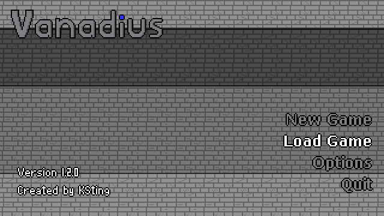
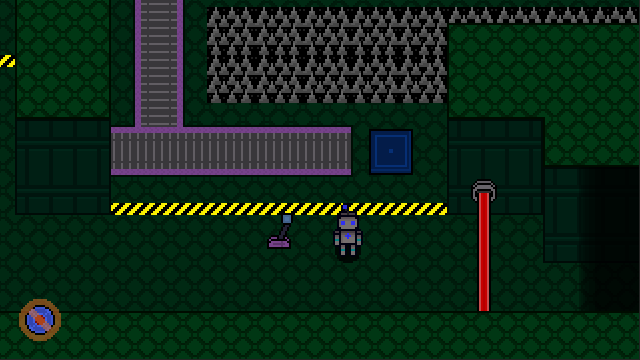
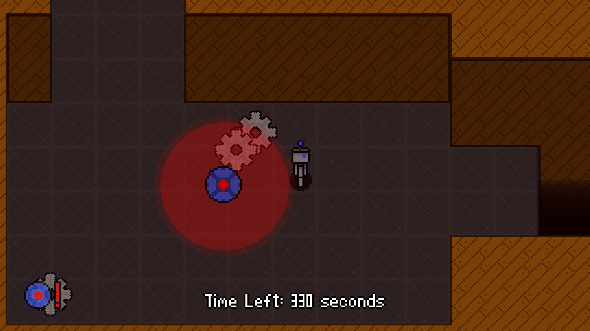

Vanadius
Released: July 20, 2019
My first game, made using Gamemaker Studio 2! It's not great by any stretch of the imagination, but it holds a special place in my heart. You play as a robot, solving (basic) puzzles in an attempt to escape a mysterious facility. The development took way longer than it probably should have, mainly due to my engine choice and my lack of experience.
It's quite buggy, and at a certain point I completely gave up on trying to fix it. I've put out a few patches since release, containing only minor changes. Looking back, I'm surprised with what I was able to pull off with my extremely limited experience in an extremely limiting engine.
Engine choice would be my one regret, as now the game stuck on an engine I can't use, making more patches impossible. With that in mind, I've decided to port the game to the Godot Engine (which is far more capable). You can learn more about that version on the Vanadius: Anniversary Edition page.
Game Download
Wanna play? You can get the game on itch.io for free!
If you can't use itch.io, or you want to download an older version, I've compiled a version archive right here on this site!
Extras
I've compiled a spritesheet archive on this very site! You can browse through all the sprites in the game, and download them if you so choose.


